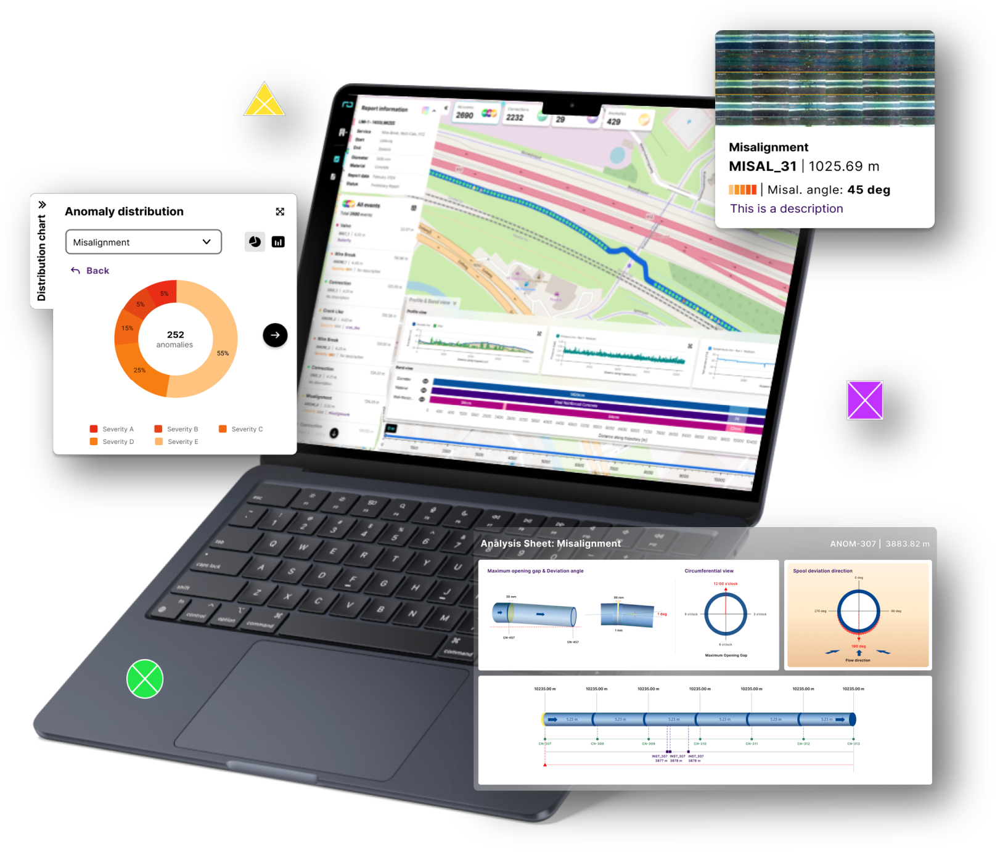
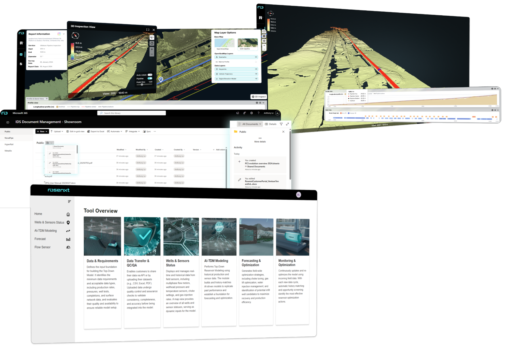

Our 2025
In 2025, performance at Rosenxt Vietnam was not defined by results alone.
It was shaped by how our teams worked together, how they responded to constraints, and how they continuously improved their way of working while still delivering meaningful outcomes.

WLIN/Linegy Inspection Report
Currently used by Customers 'EVIDES', 'DUNEA' & 'WATERNET'
3
digital reports launched
10-minute
onboarding for quick account & company demo setup
2
new report templates released for Misalignment & Wire Break
99.9%
reduce delivery time from 2 weeks to 15 mins

Venture Highlights
UpsO, Renewable, IDS & Subsea
02
new ventures onboarded successfully to RNCP: UpsO & Renewable
Renewable & IDS: Enabled to securely exchange documents with customers through the RNCP
Subsea: Delivered a prototype of the Subsea AUV 3D interactive report accessible via the RNCP
UpsO:
- > 20 active UpsO users joined the tenant so far
- Integrated UpsO business application – Flow Meter Dashboard into RNCP
- Enabled to deliver first customer-facing frontend application via the RNCP
 Third Page
Third Page